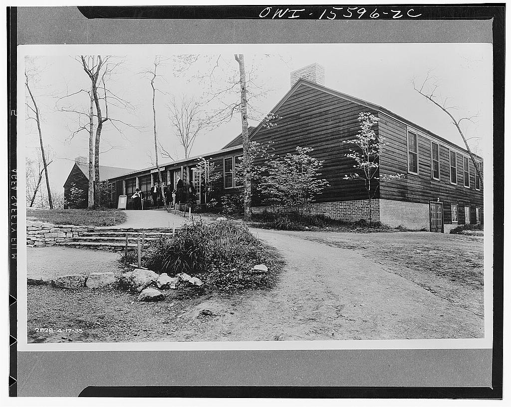
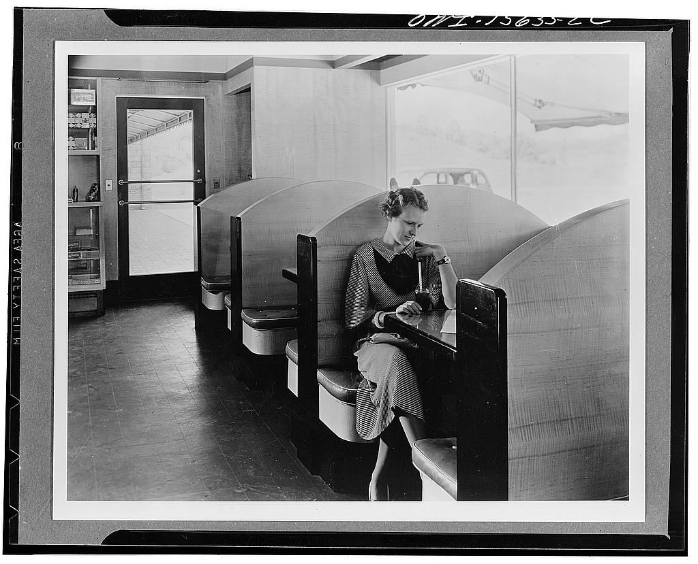
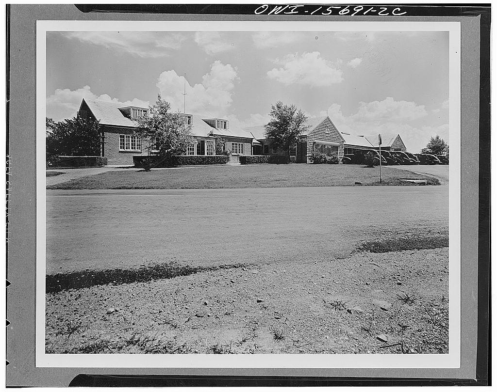
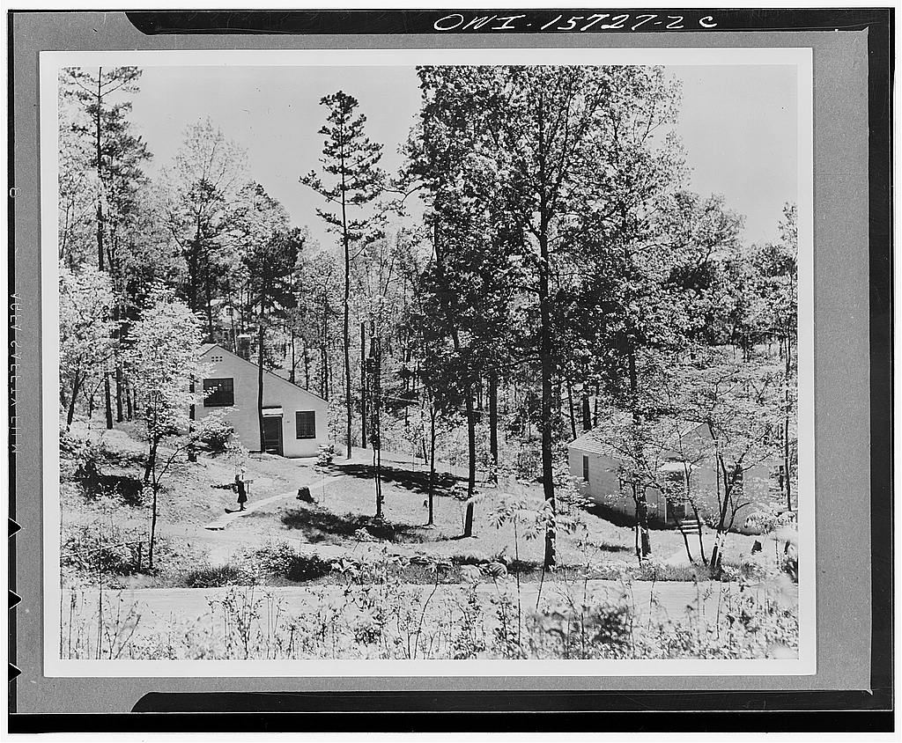

1 / 4

Original description (at the Library of Congress website): This structure is fairly typical of the kind of accomodations provided for the recreation of unmarried TVA (Tennessee Valley Authority) construction employees of both sexes. Whenever possible such structures are later converted to fill permanent needs of the region. During the construction of Norris Dam, the structure included a large lounge, a refreshment and lunch space, and auditorium with stage and projection room, capable of accomodating 300, library and reading room, barber and beauty shop, restrooms, administrative office and committee or lecture rooms. The auditorium was converted into a gymnasium. It now serves as a community building for the permanent residents of the town of Norris, a regular restaurant having replaced the refreshment room, while the county art center has been installed in place of the library, and the offices, display room, and storage room of the handicraft cooperative have taken up the space formerly occupied by the barber and beauty shop.
Date Created/Published: between 1933 and 1945.
Medium: 1 negative : safety ; 4 x 5 inches or smaller.
Reproduction Number: LC-USW33-015596-ZC (b&w film neg.)
URL: http://www.loc.gov/pictures/collection/fsa/item/owi2003050980/PP/
2 / 4

Original description (from the Library of Congress website): Portion of the drugstore in the building shown on K 1870. The refreshment booths occupy the long front window and, having a good view of the traffic on the main plaza of the town as well as of customers to the various stores, have developed into the social center of the town.
Date Created/Published: between 1933 and 1945.
Medium: 1 negative : safety ; 4 x 5 inches or smaller.
Reproduction Number: LC-USW33-015633-ZC (b&w film neg.)
Call Number: LC-USW33- 015633-ZC [P&P]
Repository: Library of Congress Prints and Photographs Division Washington, D.C. 20540 http://hdl.loc.gov/loc.pnp/pp.print
URL:http://www.loc.gov/pictures/collection/fsa/item/owi2003051016/PP/
3 / 4

Original description (from the Library of Congress website): Group of administrative and store buildings in the town of Norris. The left wing houses the town management offices. The middle portion includes a drugstore, food store, general store, and beauty parlor; the far wing, of which only part is visible, houses the post office and telephone exchange. In addition to serving the needs of the town of Norris, this group was conceived as a demonstration of acceptable design for facilities which normally tend to be ugly, disorganized, and neglected in the average small town
Date Created/Published: between 1933 and 1945.Medium: 1 negative : safety ; 4 x 5 inches or smaller.Reproduction Number: LC-USW33-015691-ZC (b&w film neg.)
Call Number: LC-USW33- 015691-ZC [P&P]
Repository: Library of Congress Prints and Photographs Division Washington, D.C. 20540 http://hdl.loc.gov/loc.pnp/pp.print
URL:http://www.loc.gov/pictures/collection/fsa/item/owi2003051063/PP/
3 / 4

Original description (from the Library of Congress website): Employee housing. To accommodate construction personnel at projects, most of which are at some distance from population centers, the TVA (Tennessee Valley Authority) built permanent housing where there were reasons to expect such communities to be permanent. Being the single owner of land and of structures, the Authority used such housing projects to demonstrate modern principles of town planning of which other federal housing programs and private enterprise made use subsequently. The photograph shows a scene in the town of Norris, Tennessee, adjacent to Norris Dam
Date Created/Published: between 1933 and 1945.
Medium: 1 negative : safety ; 4 x 5 inches or smaller.
Reproduction Number: LC-USW33-015727-C (b&w film neg.)
Call Number: LC-USW33- 015727-C [P&P]
Repository: Library of Congress Prints and Photographs Division Washington, D.C. 20540 http://hdl.loc.gov/loc.pnp/pp.print
URL:http://www.loc.gov/pictures/collection/fsa/item/owi2001045618/PP/
❮
❯